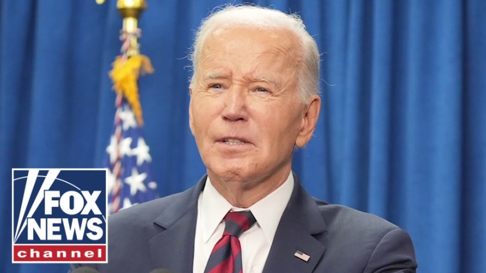

【突发：拜登被诊断出患有“侵袭性”前列腺癌】
Summary: The White House announced former President Joe Biden has been diagnosed with aggressive prostate cancer, though it appears hormone-sensitive for manageable treatment. His family is reviewing options amid concerns over his health at age 82.
摘要： 白宫宣布前总统乔·拜登被诊断出患有侵袭性前列腺癌，但该癌症对激素敏感，治疗可控。现年82岁的拜登健康状况引发担忧，其家人正在评估治疗方案。

⏱️ Estimated Reading Time: 4 min
We are continuing to monitor breaking news out of the White House about former President Joe Biden.
我们正在持续关注白宫关于前总统乔·拜登的突发新闻。
His office just revealed that the 46th president is diagnosed with an aggressive form of prostate cancer.
他的办公室刚刚透露，第46任总统被诊断出患有侵袭性前列腺癌。
Let's check back in with Maline Rivera.
让我们连线马琳·里维拉。
She is live at the White House for us.
她正在白宫为我们进行现场报道。
Maline. Hey, John.
马琳。嘿，约翰。
So, yes, we just got this information within the last half hour or so.
是的，我们大约半小时前刚刚收到这一消息。
So, I do just want to read the statement from the personal office of former President Joe Biden.
因此，我想宣读前总统乔·拜登私人办公室的声明。
It says last week, President Joe Biden was seen for a new finding of a prostate nodial after experiencing increasing urinary symptoms.
声明称，上周乔·拜登总统因尿频症状加重就诊，发现前列腺结节。
On Friday, he was diagnosed with prostate cancer characterized by a gleon score of nine grade group five with metastasis to the bone.
周五，他被确诊为格里森评分9分（第五级）并伴有骨转移的前列腺癌。
While this represents a more aggressive form of the disease, the cancer appears to be more hormone sensitive, which allows for effective management.
尽管这是更具侵袭性的癌症类型，但该癌症对激素敏感，便于有效控制。
The president and his family are reviewing treatment options with his physicians.
总统及其家人正在与医生商讨治疗方案。
So there have been a lot of headlines and concerns regarding the president's cognitive health.
此前已有许多关于总统认知健康的头条新闻和担忧。
It was one of the reasons why he was pushed out of the presidential candidacy last year, but there have been very few headlines and concerns regarding the own the president's own physical health.
这是他去年被劝退总统竞选的原因之一，但关于其身体健康的报道和担忧却很少。
In fact, I went back to see what the president's results were from his annual physical last year.
事实上，我查阅了总统去年的年度体检结果。
And it said, "President Biden is a healthy, active, robust 81-year-old male who remains fit to successfully execute the duties of the presidency to include those as chief executive, head of state, and commanderin-chief."
报告称："拜登总统是一位健康、活跃、强健的81岁男性，完全具备履行总统职责的能力，包括作为行政首长、国家元首和三军统帅。"
So, it is uh kind of shocking at this point, but the president, I've been thinking back to some of the activities that we've seen him do.
因此，当前消息令人震惊，但回想总统过往的活动——
This is a former president who has was very active.
这位前总统一直非常活跃。
We would see him go biking in Rahobit Beach whenever he would go down there with his family.
我们常看到他与家人在拉霍比特海滩骑行。
He was very physically fit and very active at least for his age.
就其年龄而言，他非常健康且活跃。
So this is shocking news.
因此这是令人震惊的消息。
Of course we are waiting to hear more information.
我们当然在等待更多信息。
Now of course Biden being the former president will be afforded some of the best care in the country but he is 82 years old.
作为前总统，拜登将获得全国最优质的医疗护理，但他已82岁高龄。
So there are understandably concerns about how his treatment may go as well.
因此人们对其治疗过程存在担忧也情有可原。
But I do want to refer to one part of that statement.
但我想引用声明中的部分内容。
Again they say at this time that this cancer appears to be hormone sensitive which allows for effective management.
声明强调该癌症目前对激素敏感，便于有效控制。
So there is that hope that the president will be able to withstand whatever treatment he does go through.
因此人们希望总统能够承受任何治疗。
But again, at this point, this statement says that this is an aggressive form of bone cancer.
但声明也指出这是侵袭性骨癌——
We are wait prostate cancer rather, excuse me.
抱歉，是侵袭性前列腺癌。
So we are waiting to hear more information that we could see come out of this news today, John.
约翰，我们正等待今天可能发布的更多消息。
All right. Thanks very much. You got it.
好的。非常感谢。明白。
Hey, Sean Hannity here.
我是肖恩·汉尼提。
Hey, click here to subscribe to Fox News YouTube page and catch our hottest interviews and most compelling analysis.
点击订阅福克斯新闻YouTube频道，获取最热门访谈和深度分析。
You will not get it anywhere else.
独家内容，别无他处。